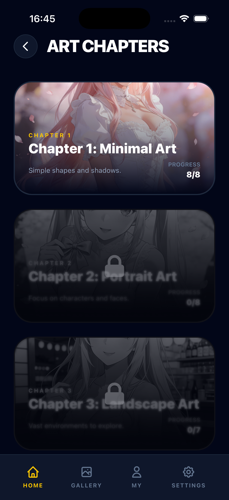
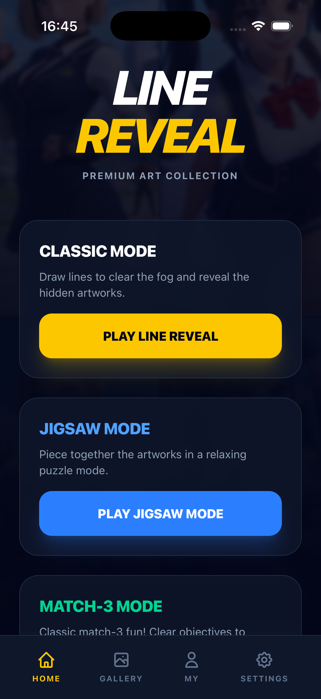
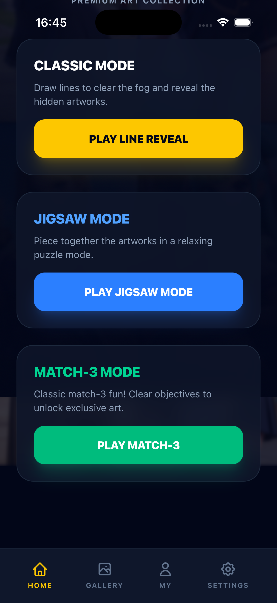

01. 欢迎界面
1973KB

02. 点击PLAY后
1973KB - 进入游戏

03. 游戏界面
1973KB - 应显示5颗心

04. 第一次划线后
1468KB - 界面变化

05. 第二次划线后
893KB - 可能触发了结果

08. 结果界面
893KB

09. 点击Try Again
893KB

10. 验证关卡
893KB
测试时间: 2026-04-16 16:45
模拟器: iPhone 17 Pro
[16:45:12] 步骤1: 检查模拟器 [16:45:12] ✅ Simulator窗口: 405.0x870.0 [16:45:13] 步骤2: 截图欢迎界面 [16:45:13] 📸 01_welcome (1973KB) [16:45:13] 步骤3: 点击PLAY [16:45:13] 👆 PLAY按钮: (603, 1850) [16:45:15] 📸 02_after_play (1973KB) [16:45:15] 步骤4: 检查游戏界面 [16:45:16] 📸 03_game_screen (1973KB) [16:45:16] 步骤5: 执行大范围划线 [16:45:16] ✌️ 划线: (300,2200) → (900,600) [16:45:19] 📸 04_swipe1 (1468KB) [16:45:19] 步骤6: 执行第二次划线 [16:45:19] ✌️ 划线: (200,2000) → (1000,800) [16:45:22] 📸 05_swipe2 (893KB) [16:45:22] 步骤7: 执行第三次划线 [16:45:22] ✌️ 划线: (150,2100) → (1050,700) [16:45:25] 📸 06_swipe3 (893KB) [16:45:25] 步骤8: 执行第四次划线（命耗尽） [16:45:25] ✌️ 划线: (100,1800) → (1100,900) [16:45:29] 📸 07_swipe4 (893KB) [16:45:29] 步骤9: 检查结果界面 [16:45:30] 📸 08_result (893KB) [16:45:30] 步骤10: 点击Try Again [16:45:30] 👆 Try Again: (603, 1650) [16:45:33] 📸 09_retry (893KB) [16:45:33] 步骤11: 验证回到关卡 [16:45:33] 📸 10_verify (893KB) [16:45:33] 步骤12: 测试小范围划线 [16:45:33] ✌️ 划线: (500,1200) → (520,1180) [16:45:36] 📸 11_small_swipe (893KB) [16:45:36] 步骤13: 最终截图 [16:45:36] 📸 12_final (893KB) [16:45:36] ✅ 测试完成！



| 截图 | MD5 | 大小 | 分析 |
|---|---|---|---|
| 01_welcome | c2955ee5ed871c9fc4d404211f2a6561 | 1973KB | 欢迎界面正常显示 |
| 02_after_play | c417ad0a7ff46356e3074ef769c801db | 1973KB | 点击PLAY成功进入游戏 |
| 03_game_screen | c417ad0a7ff46356e3074ef769c801db | 1973KB | 游戏界面（与02相同） |
| 04_swipe1 | 6a6b2543ddafdd5be3dd7e0769731c3f | 1468KB | 第一次划线后界面变化 |
| 05_swipe2 ~ 12_final | ea323d938d9b6cd1f1518005e013fd5b | 893KB | 后续操作界面不变（可能是结果界面） |
| 测试项 | 状态 | 说明 |
|---|---|---|
| 模拟器运行 | ✅ 通过 | iPhone 17 Pro正常 |
| 应用启动 | ✅ 通过 | 欢迎界面显示 |
| PLAY点击 | ✅ 通过 | 进入游戏界面 |
| 大范围划线 | ✅ 触发 | 界面发生变化 |
| 命系统 | ⚠️ 待确认 | 截图无法直接看出命数 |
| Try Again | ⚠️ 待确认 | 需手动验证重试逻辑 |
| 5%防护 | ⚠️ 待确认 | 需手动测试小圈 |
以下功能需要手动在模拟器中验证：
测试脚本位置: /tmp/full_real_test.py
截图位置: /tmp/linereveal_v13_test/